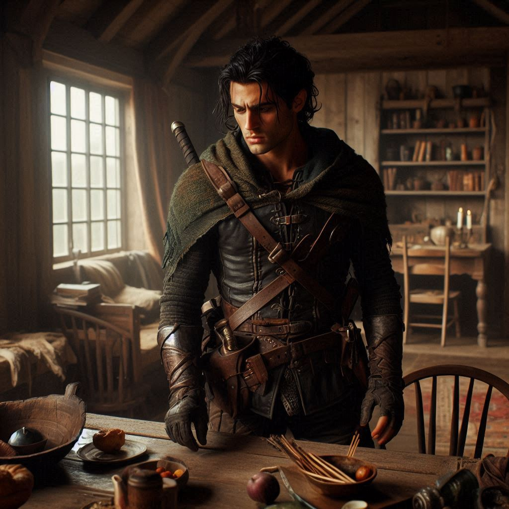
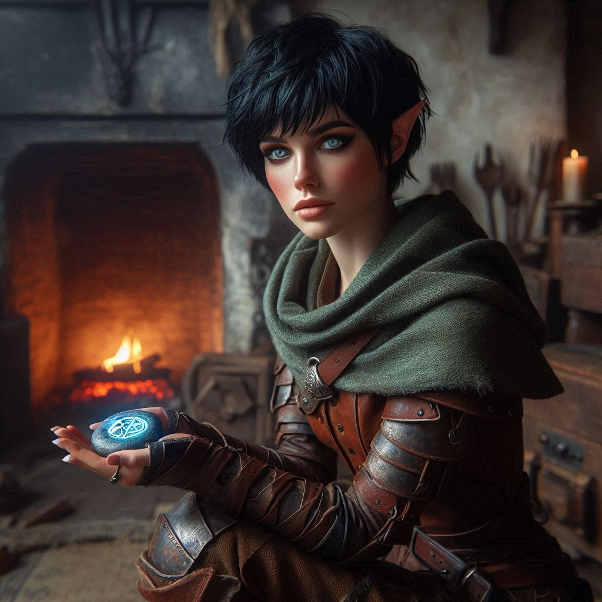
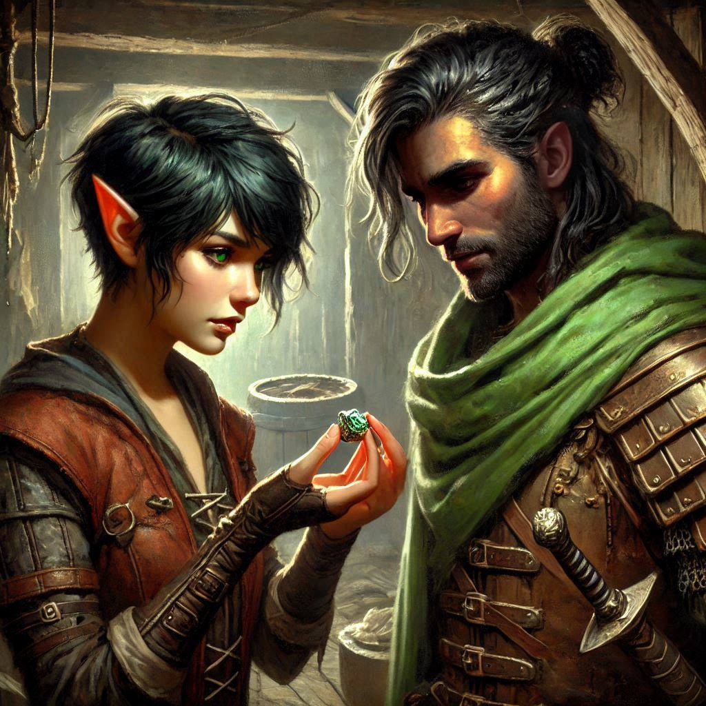

Onyx and Elias
The weight of the map presses heavily against your side as you make your way back to Belladonna. The alleyways twist and turn, shrouded in darkness, but your path is clear. You can’t shake the feeling that eyes are on you, that danger still lurks, even after the ambush. The Minister’s mercenaries may be gone, but their shadow still looms.
With each step, Liora’s words echo in your mind—warnings about meddling in royal affairs. But it’s too late to turn back now. The map is yours, and the only person who can help you decipher it is Onyx. You trust him, despite the complicated past he shares with your adoptive father, Baider. The thought of facing Onyx fills you with both anticipation and dread. He’s gruff and guarded, but his knowledge is unparalleled, especially when it comes to the ancient secrets hidden in the caverns.
As you approach his small stone home, the familiar outline of Belladonna’s buildings comes into view. The quiet of the night wraps around you, but something feels wrong. The village is too still.
Your heart races as you turn the final corner to Onyx’s home—only to stop in your tracks. The door hangs off its hinges, the faint glow of torchlight flickers inside, and the scent of burned wood fills the air.
Your hand instinctively moves to your sword as you step cautiously forward. The inside of Onyx’s home is ransacked, shelves overturned, and books scattered across the floor. Panic gnaws at you. Onyx is missing.
You scan the room, looking for any sign of where he might be or what happened. No blood, no signs of a struggle—just destruction. You kneel to examine the wreckage, but there are no clear answers. What could have happened here?
Just as you stand, your keen senses alert you to someone approaching. You barely have time to turn when a familiar voice cuts through the silence.
“Kira, what are you doing here?” It’s Elias, his tone sharp, his figure emerging from the shadows like a ghost.
Elias strides forward, his eyes searching your face for answers. His presence, as always, stirs something deep inside you. He’s more than just a fellow ranger; he’s someone you’ve fought alongside for years, someone who knows you better than most. But tonight, there’s tension in the air—a tension that’s been building for far too long.
“You shouldn’t be out here alone,” he says, his voice laced with frustration. “Especially after what happened in the city. You’re injured.” His eyes flicker to the bandage on your arm, still bloodied from the ambush.
“I’m fine,” you reply, brushing off his concern as you step deeper into Onyx’s wrecked home. You don’t have time for this. Onyx is missing, and you need to figure out why.
Elias follows you inside, his jaw clenched. “Clearly, you’re not,” he mutters. “Kira, I heard about the mercenaries. The Minister of Trade’s men are after you. Why didn’t you wait for me?”
You ignore the question, sifting through the debris. “I didn’t need your help, Elias. I still don’t.”
His frustration bubbles to the surface. “This isn’t about proving yourself! You could have been killed!”
The words sting, but you don’t let them show. Elias has always been protective, but this mission is yours. You can’t afford to rely on him, not now. Not when there’s so much at stake.
“I can handle myself,” you say, your voice steady but cold.
Elias shakes his head, his eyes filled with both anger and worry. “That’s the problem, Kira. You always think you can handle everything on your own. But this isn’t just about you anymore. The Minister’s mercenaries, Jorsh, the caverns—there are bigger forces at play here.”
You turn to face him, your heart pounding. “I know that,” you snap. “But I don’t need you to save me, Elias. This is my mission, and I have to do it alone.”
The silence that follows is thick, charged with the emotions neither of you have acknowledged. You see the hurt in Elias’s eyes, the way his shoulders tense as if he’s trying to hold back words he’s wanted to say for far too long.
“Kira, I—” He hesitates, his voice softening. “I’m not trying to save you. I just… I care about you.”
The confession hangs in the air, heavy with unspoken meaning. You feel your chest tighten, emotions you’ve buried rising to the surface. Elias has been at your side for years, always loyal, always steady. And now, here he is, baring a part of himself you’ve refused to confront.
But you can’t let yourself get distracted. Not now.
You shake your head, turning back to the mess. “This isn’t the time, Elias.”
“When is it ever the time?” he says, a hint of bitterness creeping into his voice. “Every time I try to talk to you, you shut me out. I get it—you’re focused on the mission. But one of these days, you’re going to have to let someone in.”
You clench your fists, anger and confusion swirling inside you. You want to tell him that it’s not that simple, that you do care about him—but the mission comes first. It always has. And you can’t afford to let your guard down, not when everything is so uncertain.
But instead, you say nothing. The silence stretches between you like a chasm.
Elias sighs, running a hand through his hair. “Fine. You want to do this alone? Go ahead. But don’t expect me to stand by and watch you get yourself killed.”
With that, he turns and storms out of the house, leaving you standing in the wreckage. The door slams shut behind him, hanging on one hinge. The sound echoes through the empty space like a lost feeling inside a broken heart.
You stand there for a moment, the tension from the argument still thick in the air. But as much as you want to chase after Elias, to explain why you’ve kept your distance, you push those thoughts aside. Onyx is missing, and you need to find him.
Looking around the room again, you notice something you hadn’t before—a strange symbol carved into the surface of a small smooth stone near the hearth. It’s faint, almost hidden beneath the dust and rubble, but unmistakable: an ancient rune, one that speaks of protection and secrecy.
Your pulse quickens. Onyx wouldn’t leave without a trace. This rune—it’s a message. He’s still out there, somewhere. And you need to figure out what it means.
As you kneel to examine the rune, the weight of the map presses against your side once more. Whatever happens next, you know one thing for sure: you’ll need help. Whether you want to admit it or not, Elias was right. The forces at play here are bigger than anything you imagined, and you can’t face them alone.
The shattered door swings in the wind and bangs against the door jamb, jolting you to your feet with your sword drawn instinctively. You peer through the open doorway into the dark street beyond the threshold.
“Who’s there?” you call out. “Show yourself now!”
Elias saunters sheepishly around the corner, his thumbs tucked in his belt and his eyes on the floor. “I couldn’t leave angry. Something told me to come back and make things right before you go.”
“You idiot,” you huff, sheathing your sword. You feel angry at yourself when you realize how relieved you are that Elias came back.
He looks up at you, sheepishly.
“Fine. I forgive you,” you say.
“You forgive me?” he says with a sideways grin. “I came back to get an apology from you.”
“Too bad,” you say, holding up the rune stone. “I was right and you were wrong, end of story. But I found this teleportation spell. And I need you to come with me to wherever it goes.”
“Apology accepted,” he says, his grin becoming more genuine as his stormy gray eyes meet yours. “How do we know that teleportation rune stone will take us to Onyx or to Jorsh? Are you sure we shouldn’t just head to Hemlock falls where we know Jorsh was last seen?”
Damn. You hate it when Elias argues with you. Always presenting another option without an opinion of his own.